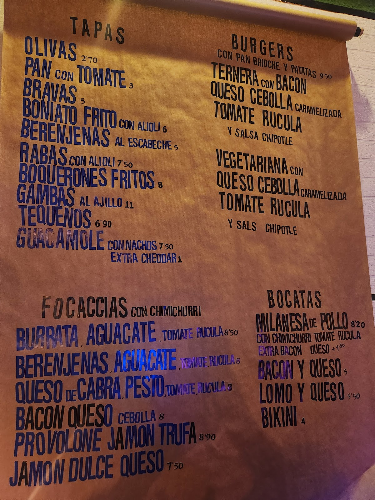

En la mesa, poesía culinaria: fantasías de focaccia, bocatas de pollo y bacon, y una selección de mezcales que sube el nivel de cualquier noche.On the table, culinary poetry: focaccia creations, chicken-and-bacon sandwiches, and a mezcal selection that lifts any night.
Un lugar súper ameno para pasar un buen rato, con performances de poesía, actuación y canto. Divertido, emotivo y con muy buena atención. Se repite sin dudarlo.A genuinely fun place to hang out, with poetry performances, acting and singing. Playful, moving, and warmly run. You'll come back without a doubt.
